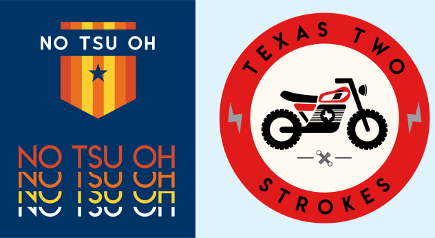

I’m Sharon Tsao (she/her), a Texas-based UX designer with a background in graphic design and science policy. I’m passionate about designing user experiences that improve quality of life, foster independence, and empower the user.
Give me a holler at sharontsao@hey.com.
When I’m not behind my Macbook, you’ll find me playing ultimate frisbee or hiking with my dog! Check out the professional women's ultimate team I play for - The Austin Torch.
With a degree in neurobiology and lifelong interest in science, I’ve always had an analytical mind that craves empirical evidence. In college at the University of Texas, I delighted in learning about how circuits in our brain process information and mediate human behavior.
Wanting to affect change more broadly, I pursued a career in science and technology policy because of its role in protecting public trust in research and promoting scientific innovation. As a policy researcher, I advocated for evidence-based policies with a focus on vaccines and human embryo research.
As a graphic designer, I learned how to create aesthetically pleasing designs with a purpose. My logo and jersey designs are all about communicating with target audiences by using the right combination of colors, typography, images and symbols. But, of course, I knew there was more to design than following my personal biases and recent trends. The scientist in me wanted to know what research could do for design. And what design could do for our society.
Both the scientist and designer in me was thrilled to discover user experience design. UX design is the perfect harmony of my passion for visual design and my deep curiosity for understanding human behavior.
In Bloc’s UX bootcamp, I developed the toolkit to methodically implement the iterative research and design process. At Rocksauce Studios, I've learned how to employ design thinking to understand the user, question assumptions and redefine problems. UX design is all about forming a relationship with the user while reaching business goals. I believe successful UX design improves quality of life, fosters independence, and empowers the user. I’m seeking to work with a team that solves complex problems while engaging with the ethical dimension of design.